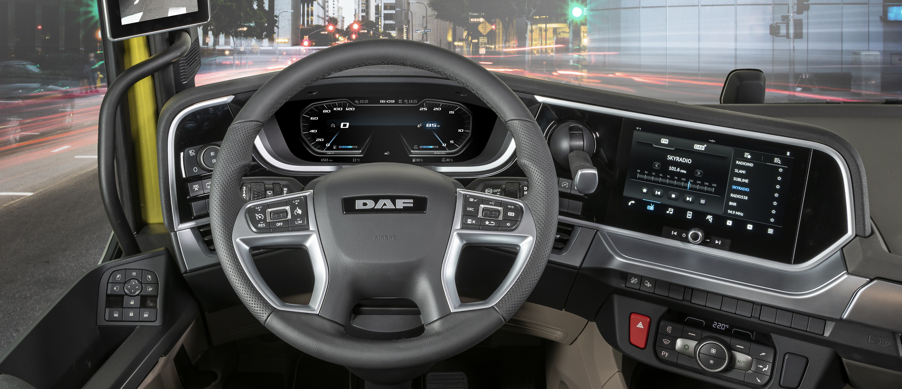
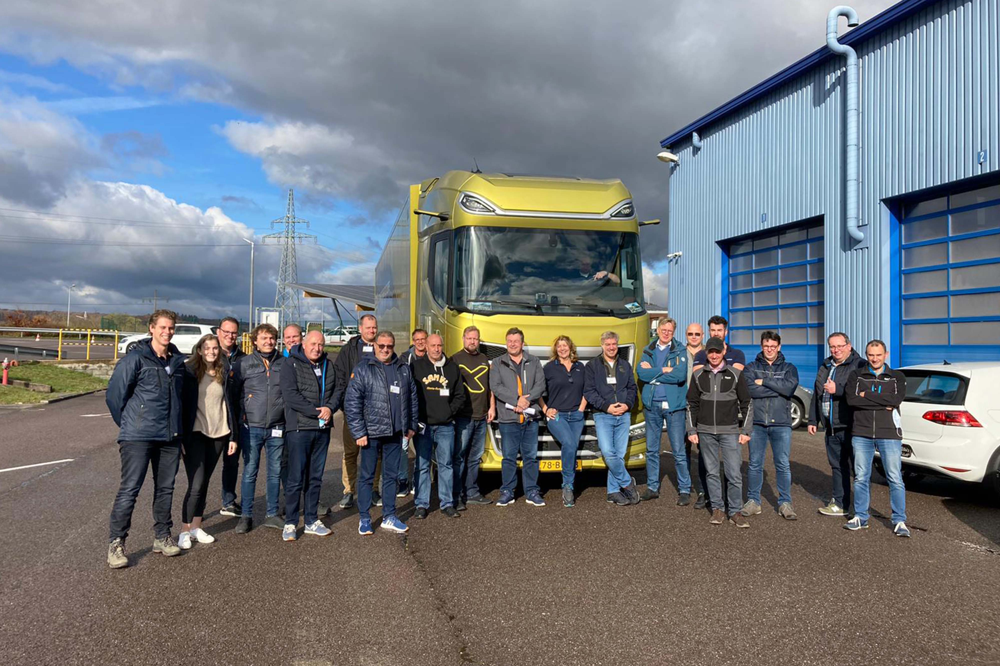
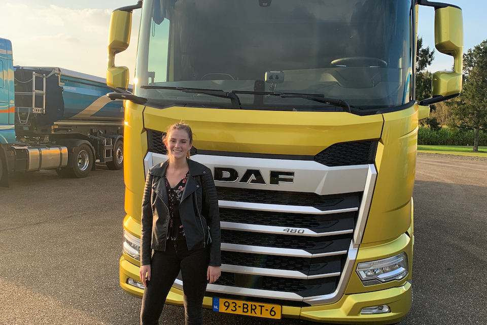
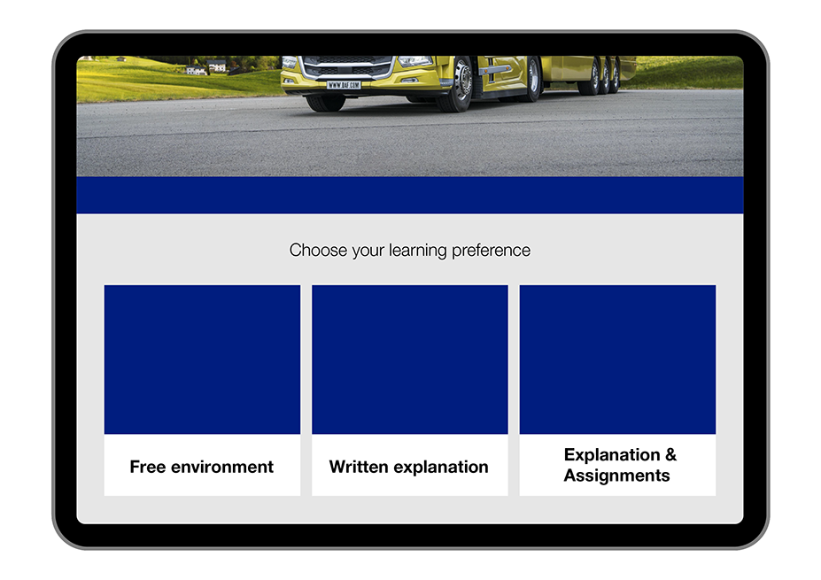

DAF Trucks
Concepting, Design, Development - 2022

Concepting, Design, Development - 2022
DAF Trucks is een technologiebedrijf en fabrikant van transportoplossingen. Dit jaar is een nieuwe generatie vrachtwagens aan de wereld gepresenteerd. Deze nieuwe vrachtwagens zijn de XF, XG en XG+ modellen. In deze nieuwe hightech, luxe vrachtwagens van het volgende niveau, zijn meerdere digitale schermen aanwezig, één voor het dashboard en één voor het infotainmentsysteem.

Een functie die voor mijn eigen opdracht belangrijk was, was het dashboardscherm. Op het dashboard zijn een aantal opties die kunnen worden aangepast aan de behoeften van de chauffeur. Deze opties kunnen gewijzigd of ingesteld worden met behulp van de knoppen op het stuur. Maar voordat het dashboardscherm gebruikt kon worden, moest er een emulator gemaakt worden om chauffeurs te leren hoe ze de knoppen op het stuur moeten bedienen.
De opdracht voor mijn stage was om een tool te ontwikkelen die het nieuwe dashboard systeem en de bedieningselementen van de New Generation-vrachtwagens uitlegt ter ondersteuning van trainingen en presentaties. Het doel van het project was om een simulator te bouwen die de doelgroep kan gebruiken om op interactieve wijze het nieuwe dashboardscherm te leren kennen of te onderwijzen zonder dat de vrachtwagen aanwezig is.


Met deze informatie is er gebrainstormd en zijn er verschillende concepten bedacht om aan de belanghebbenden van DAF te presenteren. Uiteindelijk hebben we gekozen voor het concept ‘Customization Fits All’. Personalisatie versterkt de band tussen klant en product, omdat het product is aangepast aan de persoonlijke behoeften van de klant. Wanneer de doelgroep de applicatie opent, krijgen ze meerdere leermogelijkheden aangeboden: Free Format, waarbij ze vrij kunnen verkennen en uitleg krijgen over de bedieningselementen van het stuur. Bij de Guided-methode krijgt de gebruiker verschillende lessen over de bedieningselementen en moeten ze tijdens de lessen op de juiste bedieningselementen klikken.


Ik heb verschillende ontwerpen gemaakt voor de applicatie en de verschillende leermogelijkheden. Ik begin met schetsen om een algemeen idee te krijgen van welke items op een pagina moeten komen, daarna ga ik verder met wireframing om te zien hoe de pagina's moeten worden opgebouwd en hoe de doelgroep de applicatie moet gaan navigeren. Ten slotte is het ontwerpproces. Ik heb meerdere iteraties gemaakt en deze aan de belanghebbenden en de doelgroep gepresenteerd. Uiteindelijk zijn we het eens geworden over een ontwerp en kon de ontwikkeling van de applicatie beginnen.